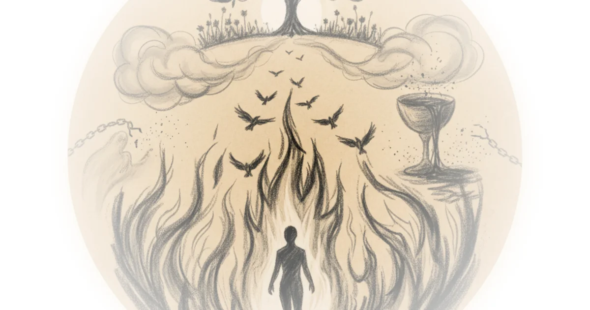

Stochastic lobsters, token tsunamis, & the spinning-up of isaac576bot Brad DeLong · DeLong's Grasping Reality ·Apr 6, 2026 · 10 min read · Philosophy
How to think about AI like a long-term investor Alberto Romero · The Algorithmic Bridge ·Apr 6, 2026 · 10 min read · Philosophy
What hegel knew about the administration Yascha Mounk · Persuasion ·Apr 6, 2026 · 17 min read · Philosophy
Two ways to think about the collective will Richard Hanania · ·Apr 6, 2026 · 13 min read · Philosophy
The illusion of experience #405 Andreas Matthias · Daily Philosophy ·Apr 4, 2026 · 10 min read · Philosophy
Perhaps there are options other than "toxic confidence" and insecurity-as-identity Freddie deBoer · ·Apr 2, 2026 · 11 min read · Philosophy
Resisting the third wave of democratic backsliding Yascha Mounk · Persuasion ·Apr 2, 2026 · 13 min read · Philosophy
China on AI job loss: “No ‘matrix’ for US, thanks.” Jordan Schneider · ChinaTalk ·Apr 1, 2026 · 15 min read · Philosophy
Green shoots amid the third wave of democratic backsliding Yascha Mounk · Persuasion ·Mar 31, 2026 · 12 min read · Philosophy
How China hopes to build agi through self-improvement Jordan Schneider · ChinaTalk ·Mar 30, 2026 · 19 min read · Philosophy
Import AI 451: Political superintelligence; Google's society of minds, and a robot drummer Jack Clark · Import AI ·Mar 30, 2026 · 16 min read · Philosophy
Would socrates have valued AI? #404 Andreas Matthias · Daily Philosophy ·Mar 28, 2026 · 10 min read · Philosophy
Chartbook 438: "The continuation of critical theory by narrative means" - alexander kluge and the anti-realism of feelings. Adam Tooze · Chartbook ·Mar 28, 2026 · 33 min read · Philosophy
Progress as political artifact: How elites, accidents, and institutions decide what history calls inevitable Multiple sources: Kamil Galeev and 1 other · Kamil Galeev ·Mar 27, 2026 · Philosophy
My intelligence isn't artificial, thanks Yascha Mounk · Persuasion ·Mar 26, 2026 · 10 min read · Philosophy
It’s AI, so i didn’t read Alberto Romero · The Algorithmic Bridge ·Mar 26, 2026 · 11 min read · Philosophy
The radical act of giving a damn Jeannine Ouellette · Writing in the Dark ·Mar 26, 2026 · 12 min read · Philosophy
15. Purgatory xxx, xxxi, xxxiii Yale University · Yale Courses ·Mar 25, 2026 · 50 min read · Philosophy 
8. Inferno xxvi, xxvii, xxviii Yale University · Yale Courses ·Mar 25, 2026 · 52 min read · Philosophy
Lecture 1: Introduction to power and politics in today’s world Yale University · Yale Courses ·Mar 25, 2026 · 36 min read · Philosophy
Nature of genius 133 geography Yale University · Yale Courses ·Mar 25, 2026 · 10 min read · Philosophy
Nature of genius 113 changing face of genius Yale University · Yale Courses ·Mar 25, 2026 · 10 min read · Philosophy